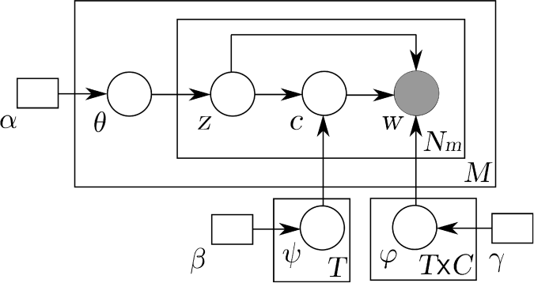
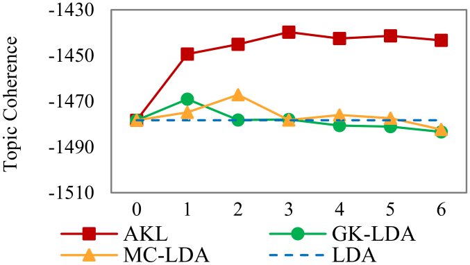
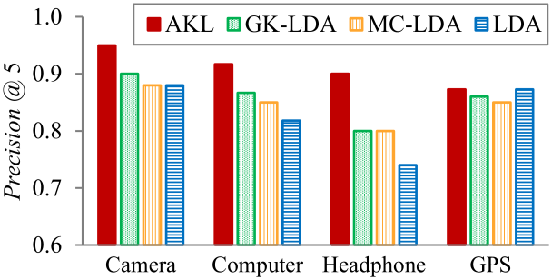
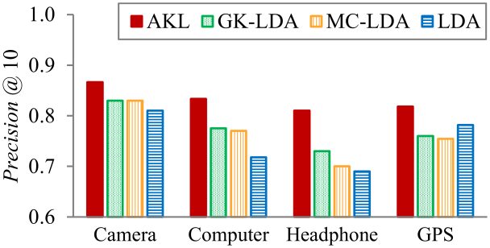
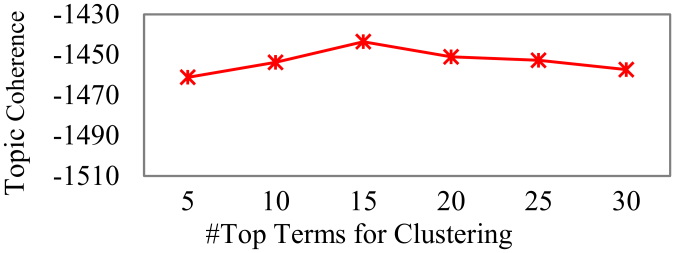
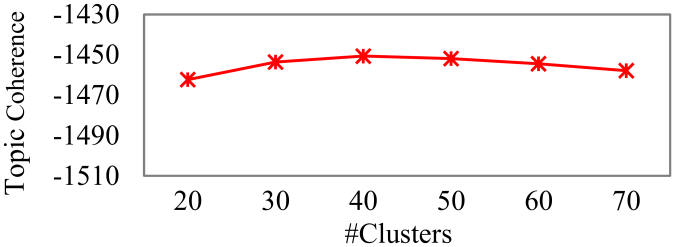
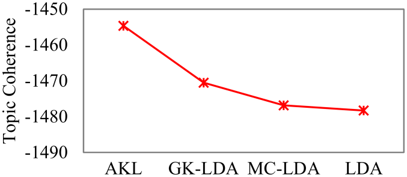

Aspect Extraction with Automated Prior Knowledge Learning
Department of Computer Science
University of Illinois at Chicago
Chicago, IL 60607, USA
{czyuanacm,arjun4787}@gmail.com,liub@cs.uic.edu
Abstract
Aspect extraction is an important task in sentiment analysis. Topic modeling is a popular method for the task. However, unsupervised topic models often generate incoherent aspects. To address the issue, several knowledge-based models have been proposed to incorporate prior knowledge provided by the user to guide modeling. In this paper, we take a major step forward and show that in the big data era, without any user input, it is possible to learn prior knowledge automatically from a large amount of review data available on the Web. Such knowledge can then be used by a topic model to discover more coherent aspects. There are two key challenges: (1) learning quality knowledge from reviews of diverse domains, and (2) making the model fault-tolerant to handle possibly wrong knowledge. A novel approach is proposed to solve these problems. Experimental results using reviews from 36 domains show that the proposed approach achieves significant improvements over state-of-the-art baselines.
nolistsep
1 Introduction
Aspect extraction aims to extract target entities and their aspects (or attributes) that people have expressed opinions upon [20, 34]. For example, in “The voice is not clear,” the aspect term is “voice.” Aspect extraction has two subtasks: aspect term extraction and aspect term resolution. Aspect term resolution groups extracted synonymous aspect terms together. For example, “voice” and “sound” should be grouped together as they refer to the same aspect of phones.
Recently, topic models have been extensively applied to aspect extraction because they can perform both subtasks at the same time while other existing methods all need two separate steps (see Section 2). Traditional topic models such as LDA [5] and pLSA [19] are unsupervised methods for extracting latent topics in text documents. Topics are aspects in our task. Each aspect (or topic) is a distribution over (aspect) terms. However, researchers have shown that fully unsupervised models often produce incoherent topics because the objective functions of topic models do not always correlate well with human judgments [9].
To tackle the problem, several semi-supervised topic models, also called knowledge-based topic models, have been proposed. DF-LDA [2] can incorporate two forms of prior knowledge from the user: must-links and cannot-links. A must-link implies that two terms (or words) should belong to the same topic whereas a cannot-link indicates that two terms should not be in the same topic. In a similar but more generic vein, must-sets and cannot-sets are used in MC-LDA [11]. Other related works include [1, 10, 12, 44, 21, 22, 36, 47]. They all allow prior knowledge to be specified by the user to guide the modeling process.
In this paper, we take a major step further. We mine the prior knowledge directly from a large amount of relevant data without any user intervention, and thus make this approach fully automatic. We hypothesize that it is possible to learn quality prior knowledge from the big data (of reviews) available on the Web. The intuition is that although every domain is different, there is a decent amount of aspect overlapping across domains. For example, every product domain has the aspect/topic of “price,” most electronic products share the aspect “battery” and some also share “screen.” Thus, the shared aspect knowledge mined from a set of domains can potentially help improve aspect extraction in each of these domains, as well as in new domains. Our proposed method aims to achieve this objective. There are two major challenges: (1) learning quality knowledge from a large number of domains, and (2) making the extraction model fault-tolerant, i.e., capable of handling possibly incorrect learned knowledge. We briefly introduce the proposed method below, which consists of two steps.
Learning quality knowledge: Clearly, learned knowledge from only a single domain can be erroneous. However, if the learned knowledge is shared by multiple domains, the knowledge is more likely to be of high quality. We thus propose to first use LDA to learn topics/aspects from each individual domain and then discover the shared aspects (or topics) and aspect terms among a subset of domains. These shared aspects and aspect terms are more likely to be of good quality. They can serve as the prior knowledge to guide a model to extract aspects. A piece of knowledge is a set of semantically coherent (aspect) terms which are likely to belong to the same topic or aspect, i.e., similar to a must-link, but mined automatically.
Extraction guided by learned knowledge: For reliable aspect extraction using the learned prior knowledge, we must account for possible errors in the knowledge. In particular, a piece of automatically learned knowledge may be wrong or domain specific (i.e., the words in the knowledge are semantically coherent in some domains but not in others). To leverage such knowledge, the system must detect those inappropriate pieces of knowledge. We propose a method to solve this problem, which also results in a new topic model, called AKL (Automated Knowledge LDA), whose inference can exploit the automatically learned prior knowledge and handle the issues of incorrect knowledge to produce superior aspects.
In summary, this paper makes the following contributions:
- [leftmargin=*]
- 1.
It proposes to exploit the big data to learn prior knowledge and leverage the knowledge in topic models to extract more coherent aspects. The process is fully automatic. To the best of our knowledge, none of the existing models for aspect extraction is able to achieve this.
- 2.
It proposes an effective method to learn quality knowledge from raw topics produced using review corpora from many different domains.
- 3.
It proposes a new inference mechanism for topic modeling, which can handle incorrect knowledge in aspect extraction.
2 Related Work
Aspect extraction has been studied by many researchers in sentiment analysis [34, 46], e.g., using supervised sequence labeling or classification [13, 23, 28, 31, 59] and using word frequency and syntactic patterns [20, 29, 35, 48, 49, 53, 56, 57, 61, 64, 65, 66]. However, these works only perform extraction but not aspect term grouping or resolution. Separate aspect term grouping has been done in [8, 16, 62]. They assume that aspect terms have been extracted beforehand.
To extract and group aspects simultaneously, topic models have been applied by researchers [6, 7, 11, 15, 18, 24, 27, 30, 32, 33, 38, 37, 39, 41, 43, 44, 52, 54, 55, 63]. Our proposed AKL model belongs to the class of knowledge-based topic models. Besides the knowledge-based topic models discussed in Section 1, document labels are incorporated as implicit knowledge in [4, 50]. Geographical region knowledge has also been considered in topic models [14]. All of these models assume that the prior knowledge is correct. GK-LDA [10] is the only knowledge-based topic model that deals with wrong lexical knowledge to some extent. As we will see in Section 6, AKL outperformed GK-LDA significantly due to AKL’s more effective error handling mechanism. Furthermore, GK-LDA does not learn any prior knowledge.
Our work is also related to transfer learning to some extent. Topic models have been used to help transfer learning [18, 45, 58]. However, transfer learning in these papers is for traditional classification rather than topic/aspect extraction. In [25], labeled documents from source domains are transferred to the target domain to produce topic models with better fitting. However, we do not use any labeled data. In [60], a user provided parameter indicating the technicality degree of a domain was used to model the language gap between topics. In contrast, our method is fully automatic without human intervention.
3 Overall Algorithm
This section introduces the proposed overall algorithm. It consists of two main steps: learning quality knowledge and using the learned knowledge. Figure 1 gives the algorithm.
| Input: | Corpora for knowledge learning |
| Test corpora |
[1] \STATE\COMMENT// STEP 1: Learning prior knowledge. \FOR[ // Iterate times.] to \FOReach domain corpus \IF \STATE LDA; \ELSE\STATE AKL; \ENDIF\ENDFOR\STATE; \STATE Clustering; \FOReach cluster \STATE FPM; \ENDFOR\STATE; \ENDFOR
\STATE\COMMENT// STEP 2: Using the learned knowledge. \FOReach test corpus \STATE AKL; \ENDFOR
Step 1 (learning quality knowledge, Lines 1-16): The input is the review corpora from multiple domains, from which the knowledge is automatically learned. Lines 3 and 5 run LDA on each review domain corpus to generate a set of aspects/topics (lines 2, 4, and 6-9 will be discussed below). Line 10 unions the topics from all domains to give . Lines 11-14 cluster the topics in into some coherent groups (or clusters) and then discover knowledge from each group of topics using frequent pattern mining (FPM) [17]. We will detail these in Section 4. Each piece of the learned knowledge is a set of terms which are likely to belong to the same aspect.
Iterative improvement: The above process can actually run iteratively because the learned knowledge can help the topic model learn better topics in each domain , which results in better knowledge in the next iteration. This iterative process is reflected in lines 2, 4, 6-9 and 16. We will examine the performance of the process at different iterations in Section 6.2. From the second iteration, we can use the knowledge learned from the previous iteration (lines 6-8). The learned knowledge is leveraged by the new model AKL, which is discussed below in Step 2.
Step 2 (using the learned knowledge, Lines 17-20): The proposed model AKL is employed to use the learned knowledge to help topic modeling in test domains , which can be or other unseen domains. The key challenge of this step is how to use the learned prior knowledge effectively in AKL and deal with possible errors in . We will elaborate them in Section 5.
Scalability: the proposed algorithm is naturally scalable as both LDA and AKL run on each domain independently. Thus, for all domains, the algorithm can run in parallel. Only the resulting topics need to be brought together for knowledge learning (Step 1). These resulting topics used in learning are much smaller than the domain corpus as only a list of top terms from each topic are utilized due to their high reliability.
4 Learning Quality Knowledge
This section details Step 1 in the overall algorithm, which has three sub-steps: running LDA (or AKL) on each domain corpus, clustering the resulting topics, and mining frequent patterns from the topics in each cluster. Since running LDA is simple, we will not discuss it further. The proposed AKL model will be discussed in Section 5. Below we focus on the other two sub-steps.
4.1 Topic Clustering
After running LDA (or AKL) on each domain corpus, a set of topics is obtained. Each topic is a distribution over terms (or words), i.e., terms with their associated probabilities. Here, we use only the top terms with high probabilities. As discussed earlier, quality knowledge should be shared by topics across several domains. Thus, it is natural to exploit a frequency-based approach to discover frequent set of terms as quality knowledge. However, we need to deal with two issues.
- [leftmargin=*]
- 1.
Generic aspects, such as price with aspect terms like cost and pricy, are shared by many (even all) product domains. But specific aspects such as screen, occur only in domains with products having them. It means that different aspects may have distinct frequencies. Thus, using a single frequency threshold in the frequency-based approach is not sufficient to extract both generic and specific aspects because the generic aspects will result in numerous spurious aspects [17].
- 2.
A term may have multiple senses in different domains. For example, light can mean “of little weight” or “something that makes things visible”. A good knowledge base should have the capacity of handling this ambiguity.
To deal with these two issues, we propose to discover knowledge in two stages: topic clustering and frequent pattern mining (FPM).
The purpose of clustering is to group raw topics from a topic model (LDA or AKL) into clusters. Each cluster contains semantically related topics likely to indicate the same real-world aspect. We then mine knowledge from each cluster using an FPM technique. Note that the multiple senses of a term can be distinguished by the semantic meanings represented by the topics in different clusters.
For clustering, we tried -means and -medoids [26], and found that -medoids performs slightly better. One possible reason is that -means is more sensitive to outliers. In our topic clustering, each data point is a topic represented by its top terms (with their probabilities normalized). The distance between two data points is measured by symmetrised KL-Divergence.
4.2 Frequent Pattern Mining
Given topics within each cluster, this step finds sets of terms that appear together in multiple topics, i.e., shared terms among similar topics across multiple domains. Terms in such a set are likely to belong to the same aspect. To find such sets of terms within each cluster, we use frequent pattern mining (FPM) [17], which is suited for the task. The probability of each term is ignored in FPM.
FPM is stated as follows: Given a set of transactions , where each transaction is a set of items from a global item set , i.e., . In our context, is the topic vector comprising the top terms of a topic (no probability attached). is the collection of all topics within a cluster and is the set of all terms in . The goal of FPM is to find all patterns that satisfy some user-specified frequency threshold (also called minimum support count), which is the minimum number of times that a pattern should appear in . Such patterns are called frequent patterns. In our context, a pattern is a set of terms which have appeared multiple times in the topics within a cluster. Such patterns compose our knowledge base as shown below.
4.3 Knowledge Representation
As the knowledge is extracted from each cluster individually, we represent our knowledge base as a set of clusters, where each cluster consists of a set of frequent 2-patterns mined using FPM, e.g.,
Cluster 1: {battery, life}, {battery, hour}, {battery, long}, {charge, long}
Cluster 2: {service, support}, {support, customer}, {service, customer}
Using two terms in a set is sufficient to cover the semantic relationship of the terms belonging to the same aspect. Longer patterns tend to contain more errors since some terms in a set may not belong to the same aspect as others. Such partial errors hurt performance in the downstream model.
5 AKL: Using the Learned Knowledge
We now present the proposed topic model AKL, which is able to use the automatically learned knowledge to improve aspect extraction.
5.1 Plate Notation
Differing from most topic models based on topic-term distribution, AKL incorporates a latent cluster variable to connect topics and terms. The plate notation of AKL is shown in Figure 2. The inputs of the model are documents, topics and clusters. Each document has terms. We model distribution as and distribution as with Dirichlet priors and respectively. is modeled by with a Dirichlet prior . The terms in each document are assumed to be generated by first sampling a topic , and then a cluster given topic , and finally a term given topic and cluster . This plate notation of AKL and its associated generative process are similar to those of MC-LDA [11]. However, there are three key differences.

- [leftmargin=*]
- 1.
Our knowledge is automatically mined which may have errors (or noises), while the prior knowledge for MC-LDA is manually provided and assumed to be correct. As we will see in Section 6, using our knowledge, MC-LDA does not generate as coherent aspects as AKL.
- 2.
Our knowledge is represented as clusters. Each cluster contains a set of frequent 2-patterns with semantically correlated terms. They are different from must-sets used in MC-LDA.
- 3.
Most importantly, due to the use of the new form of knowledge, AKL’s inference mechanism (Gibbs sampler) is entirely different from that of MC-LDA (Section 5.2), which results in superior performances (Section 6). Note that the inference mechanism and the prior knowledge cannot be reflected in the plate notation for AKL in Figure 2.
In short, our modeling contributions are (1) the capability of handling more expressive knowledge in the form of clusters, (2) a novel Gibbs sampler to deal with inappropriate knowledge.
5.2 The Gibbs Sampler
As the automatically learned prior knowledge may contain errors for a domain, AKL has to learn the usefulness of each piece of knowledge dynamically during inference. Instead of assigning weights to each piece of knowledge as a fixed prior in [10], we propose a new Gibbs sampler, which can dynamically balance the use of prior knowledge and the information in the corpus during the Gibbs sampling iterations.
We adopt a Blocked Gibbs sampler [51] as it improves convergence and reduces autocorrelation when the variables (topic and cluster in AKL) are highly related. For each term in each document, we jointly sample a topic and cluster (containing ) based on the conditional distribution in Gibbs sampler (will be detailed in Equation 4). To compute this distribution, instead of considering how well matches with only (as in LDA), we also consider two other factors:
- [leftmargin=*]
- 1.
The extent corroborates given the corpus. By “corroborate”, we mean whether those frequent 2-patterns in containing are also supported by the actual information in the domain corpus to some extent (see the measure in Equation 1 below). If corroborates well, is likely to be useful, and thus should also provide guidance in determining . Otherwise, may not be a suitable piece of knowledge for in the domain.
- 2.
Agreement between and . By agreement we mean the degree that the terms (union of all frequent 2-patterns of ) in cluster are reflected in topic . Unlike the first factor, this is a global factor as it concerns all the terms in a knowledge cluster.
For the first factor, we measure how well corroborates given the corpus based on co-document frequency ratio. As shown in [42], co-document frequency is a good indicator of term correlation in a domain. Following [42], we define a symmetric co-document frequency ratio as follows:
| (1) |
where refers to each frequent 2-pattern in the knowledge cluster . is the number of documents that contain both terms and and is the number of documents containing . A smoothing count of is added to avoid the ratio being .
For the second factor, if cluster and topic agree, the intuition is that the terms in (union of all frequent -patterns of ) should appear as top terms under (i.e., ranked top according to the term probability under ). We define the agreement using symmetrised KL-Divergence between the two distributions ( and ) corresponding to and respectively. As there is no prior preference on the terms of , we use the uniform distribution over all terms in for . For , as only top terms under are usually reliable, we use these top terms with their probabilities (re-normalized) to represent the topic. Note that a smoothing probability (i.e., a very small value) is also given to every term for calculating KL-Divergence. Given and , the agreement is computed with:
| (2) |
The rationale of Equation 2 is that the lesser divergence between and implies the more agreement between and .
We further employ the Generalized Pólya urn (GPU) model [40] which was shown to be effective in leveraging semantically related words [10, 11, 42]. The GPU model here basically states that assigning topic and cluster to term will not only increase the probability of connecting and with , but also make it more likely to associate and with term where shares a 2-pattern with in . The amount of probability increase is determined by matrix defined as:
| (3) |
where value controls the probability increase of by seeing itself, and controls the probability increase of by seeing . Please refer to [11] for more details.
Putting together Equations 1, 2 and 3 into a blocked Gibbs Sampler, we can define the following sampling distribution in Gibbs sampler so that it provides helpful guidance in determining the usefulness of the prior knowledge and in selecting the semantically coherent topic.
| (4) |
where denotes the count excluding the current assignment of and , i.e., and . denotes the number of times that topic was assigned to terms in document . denotes the times that cluster occurs under topic . refers to the number of times that term appears in cluster under topic . , and are predefined Dirichlet hyperparameters.
| Amplifier | DVD Player | Kindle | MP3 Player | Scanner | Video Player |
|---|---|---|---|---|---|
| Blu-Ray Player | GPS | Laptop | Network Adapter | Speaker | Video Recorder |
| Camera | Hard Drive | Media Player | Printer | Subwoofer | Watch |
| CD Player | Headphone | Microphone | Projector | Tablet | Webcam |
| Cell Phone | Home Theater System | Monitor | Radar Detector | Telephone | Wireless Router |
| Computer | Keyboard | Mouse | Remote Control | TV | Xbox |
Note that although the above Gibbs sampler is able to distinguish useful knowledge from wrong knowledge, it is possible that there is no cluster corroborates for a particular term. For every term , apart from its knowledge clusters, we also add a singleton cluster for , i.e., a cluster with one pattern only. When no knowledge cluster is applicable, this singleton cluster is used. As a singleton cluster does not contain any knowledge information but only the word itself, Equations 1 and 2 cannot be computed. For the values of singleton clusters for these two equations, we assign them as the averages of those values of all non-singleton knowledge clusters.
6 Experiments
This section evaluates and compares the proposed AKL model with three baseline models LDA, MC-LDA, and GK-LDA. LDA [5] is the most popular unsupervised topic model. MC-LDA [11] is a recent knowledge-based model for aspect extraction. GK-LDA [10] handles wrong knowledge by setting prior weights using the ratio of word probabilities. Our automatically extracted knowledge is provided to these models. Note that cannot-set of MC-LDA is not used in AKL.
6.1 Experimental Settings
Dataset. We created a large dataset containing reviews from product domains or types from Amazon.com. The product domain names are listed in Table 1. Each domain contains reviews. This gives us domain corpora. We have made the dataset publically available at the website of the first author.
Pre-processing. We followed [11] to employ standard pre-processing like lemmatization and stopword removal. To have a fair comparison, we also treat each sentence as a document as in [10, 11].
Parameter Settings. For all models, posterior estimates of latent variables were taken with a sampling lag of iterations in the post burn-in phase (first iterations for burn-in) with iterations in total. The model parameters were tuned on the development set in our pilot experiments and set to , , , and . Furthermore, for each cluster, is set proportional to the number of terms in it. The other parameters for MC-LDA and GK-LDA were set as in their original papers. For parameters of AKL, we used the top terms for each topic in the clustering phrase. The number of clusters is set to the number of domains. We will test the sensitivity of these clustering parameters in Section 6.4. The minimum support count for frequent pattern mining was set empirically to , where is the number of transactions (i.e., the number of topics from all domains) in a cluster.
Test Settings: We use two test settings as below:
- [leftmargin=*]
- 1.
- 2.
(Section 6.5) Test on new/unseen domain corpora after knowledge learning.

|
 |
 |
6.2 Topic Coherence
This sub-section evaluates the topics/aspects generated by each model based on Topic Coherence [42] in test setting 1. Traditionally, topic models have been evaluated using perplexity. However, perplexity on the held-out test set does not reflect the semantic coherence of topics and may be contrary to human judgments [9]. Instead, the metric Topic Coherence has been shown in [42] to correlate well with human judgments. Recently, it has become a standard practice to use Topic Coherence for evaluation of topic models [3]. A higher Topic Coherence value indicates a better topic interpretability, i.e., semantically more coherent topics.
Figure 3 shows the average Topic Coherence of each model using knowledge learned at different learning iterations (Figure 1). For MC-LDA or GK-LDA, this is done by replacing AKL in lines 7 and 19 of Figure 1 with MC-LDA or GK-LDA. Each value is the average over all 36 domains. From Figure 3, we can observe the followings:
- [leftmargin=*]
- 1.
AKL performs the best with the highest Topic Coherence values at all iterations. It is actually the best in all 36 domains. These show that AKL finds more interpretable topics than the baselines. Its values stabilize after iteration 3.
- 2.
Both GK-LDA and MC-LDA perform slightly better than LDA in iterations 1 and 2. MC-LDA does not handle wrong knowledge. This shows that the mined knowledge is of good quality. Although GK-LDA uses large word probability differences under a topic to detect wrong lexical knowledge, it is not as effective as AKL. The reason is that as the lexical knowledge is from general dictionaries rather than mined from relevant domain data, the words in a wrong piece of knowledge usually have a very large probability difference under a topic. However, our knowledge is mined from top words in related topics including topics from the current domain. The words in a piece of incorrect (or correct) knowledge often have similar probabilities under a topic. The proposed dynamic knowledge adjusting mechanism in AKL is superior.
Paired -test shows that AKL outperforms all baselines significantly .
6.3 User Evaluation
As our objective is to discover more coherent aspects, we recruited two human judges. Here we also use the test setting 1. Each topic is annotated as coherent if the judge feels that most of its top terms coherently represent a real-world product aspect; otherwise incoherent. For a coherent topic, each top term is annotated as correct if it reflects the aspect represented by the topic; otherwise incorrect. We labeled the topics of each model at learning iteration where the same pieces of knowledge (extracted from LDA topics at learning iteration 0) are provided to each model. After learning iteration 1, the gap between AKL and the baseline models tends to widen. To be consistent, the results later in Sections 6.4 and 6.5 also show each model at learning iteration 1. We also notice that after a few learning iterations, the topics from AKL model tend to have some resemblance across domains. We found that AKL with learning iterations achieved the best topics. Note that LDA cannot use any prior knowledge.
We manually labeled results from four domains, i.e., Camera, Computer, Headphone, and GPS. We chose Headphone as it has a lot of overlapping of topics with other domains because many electronic products use headphone. GPS was chosen because it does not have much topic overlapping with other domains as its aspects are mostly about Navigation and Maps. Domains Camera and Computer lay in between. We want to see how domain overlapping influences the performance of AKL. Cohen’s Kappa scores for annotator agreement are (for topics) and (for terms).
Figure 4 shows the results for and . We can see that AKL makes improvements in all domains. The improvement varies in domains with the most increase in Headphone and the least in GPS as Headphone overlaps more with other domains than GPS. Note that if a domain shares aspects with many other domains, its model should benefit more; otherwise, it is reasonable to expect lesser improvements. For the baselines, GK-LDA and MC-LDA perform similarly to LDA with minor variations, all of which are inferior to AKL. AKL’s improvements over other models are statistically significant based on paired -test .
In terms of the number of coherent topics, AKL discovers one more coherent topic than LDA in Computer and one more coherent topic than GK-LDA and MC-LDA in Headphone. For the other domains, the numbers of coherent topics are the same for all models.
Table 2 shows an example aspect (battery) and its top terms produced by AKL and LDA for each domain to give a flavor of the kind of improvements made by AKL. The results for GK-LDA and MC-LDA are about the same as LDA (see also Figure 4). Table 2 focuses on the aspects generated by AKL and LDA. From Table 2, we can see that AKL discovers more correct and meaningful aspect terms at the top. Note that those terms marked in red and italicized are errors. Apart from Table 2, many aspects are dramatically improved by AKL, including some commonly shared aspects such as Price, Screen, and Customer Service.
|
 |
 |
| Camera | Computer | Headphone | GPS | ||||
|---|---|---|---|---|---|---|---|
| AKL | LDA | AKL | LDA | AKL | LDA | AKL | LDA |
| battery | battery | battery | battery | hour | long | battery | trip |
| life | card | hour | cable | long | battery | hour | battery |
| hour | memory | life | speaker | battery | hour | long | hour |
| long | life | long | dvi | life | comfortable | model | mile |
| charge | usb | speaker | sound | charge | easy | life | long |
| extra | hour | sound | hour | amp | uncomfortable | charge | life |
| minute | minute | charge | connection | uncomfortable | headset | trip | destination |
| charger | sd | dvi | life | comfortable | life | purchase | phone |
| short | extra | tv | hdmus | period | money | older | charge |
| aa | device | hdmus | tv | output | hard | compass | mode |

6.4 Sensitivity to Clustering Parameters
This sub-section investigates the sensitivity of the clustering parameters of AKL (again in test setting ). The top sub-figure in Figure 5 shows the average Topic Coherence values versus the top terms per topic used in topic clustering (Section 4.1). The number of clusters is set to the number of domains (see below). We can observe that using top terms gives the highest value. This is intuitive as too few (or too many) top terms may generate insufficient (or noisy) knowledge.
The bottom sub-figure in Figure 5 shows the average Topic Coherence given different number of clusters. We fix the number of top terms per topic to as it yields the best result (see the top sub-figure in Figure 5). We can see that the performance is not very sensitive to the number of clusters. The model performs similarly for to clusters, with lower Topic Coherence for less than or more than clusters. The significance test indicates that using , , and clusters, AKL achieved significant improvements over all baseline models . With more domains, we should expect a larger number of clusters. However, it is difficult to obtain the optimal number of clusters. Thus, we empirically set the number of clusters to the number of domains in our experiments. Note that the number of clusters is expected to be larger than the number of topics in one domain because is for all domains while is for one particular domain.
6.5 Test on New Domains
We now evaluate AKL in test setting , i.e., the automatically extracted knowledge (Figure 1) is applied in new/unseen domains other than those in domains used in knowledge learning. The aim is to see how can help modeling in an unseen domain. In this set of experiments, each domain is tested by using the learned knowledge from the rest domains. Figure 6 shows the average Topic Coherence of each model. The values are also averaged over the tested domains. We can see that AKL achieves the highest Topic Coherence value while LDA has the lowest. The improvements of AKL over all baseline models are significant with .
7 Conclusions
This paper proposed an advanced aspect extraction framework which can learn knowledge automatically from a large number of review corpora and exploit the learned knowledge in extracting more coherent aspects. It first proposed a technique to learn knowledge automatically by clustering and FPM. Then a new topic model with an advanced inference mechanism was proposed to exploit the learned knowledge in a fault-tolerant manner. Experimental results using review corpora from 36 domains showed that the proposed method outperforms state-of-the-art methods significantly.
Acknowledgments
This work was supported in part by a grant from National Science Foundation (NSF) under grant no. IIS-1111092.
References
- [1] D. Andrzejewski, X. Zhu, M. Craven and B. Recht(2011) A framework for incorporating general domain knowledge into latent Dirichlet allocation using first-order logic. pp. 1171–1177. External Links: ISBN 978-1-57735-514-4 Cited by: 1.
- [2] D. Andrzejewski, X. Zhu and M. Craven(2009) Incorporating domain knowledge into topic modeling via Dirichlet Forest priors. pp. 25–32. Cited by: 1.
- [3] S. Arora, R. Ge, Y. Halpern, D. Mimno, A. Moitra, D. Sontag, Y. Wu and M. Zhu(2013) A Practical Algorithm for Topic Modeling with Provable Guarantees. pp. 280–288. Cited by: 6.2.
- [4] D. M. Blei and J. D. McAuliffe(2007) Supervised Topic Models. pp. 121–128. Cited by: 2.
- [5] D. M. Blei, A. Y. Ng and M. I. Jordan(2003) Latent Dirichlet Allocation. Journal of Machine Learning Research 3, pp. 993–1022. Cited by: 1, 6.
- [6] S. R. K. Branavan, H. Chen, J. Eisenstein and R. Barzilay(2008) Learning Document-Level Semantic Properties from Free-Text Annotations. pp. 263–271. Cited by: 2.
- [7] S. Brody and N. Elhadad(2010) An unsupervised aspect-sentiment model for online reviews. pp. 804–812. Cited by: 2.
- [8] G. Carenini, R. T. Ng and E. Zwart(2005) Extracting knowledge from evaluative text. pp. 11–18. Cited by: 2.
- [9] J. Chang, J. Boyd-Graber, W. Chong, S. Gerrish and D. Blei, M.(2009) Reading Tea Leaves: How Humans Interpret Topic Models. pp. 288–296. Cited by: 1, 6.2.
- [10] Z. Chen, A. Mukherjee, B. Liu, M. Hsu, M. Castellanos and R. Ghosh(2013) Discovering Coherent Topics Using General Knowledge. pp. 209–218. External Links: ISBN 9781450322638 Cited by: 1, 2, 5.2, 5.2, 6.1, 6.
- [11] Z. Chen, A. Mukherjee, B. Liu, M. Hsu, M. Castellanos and R. Ghosh(2013) Exploiting Domain Knowledge in Aspect Extraction. pp. 1655–1667. Cited by: 1, 2, 5.1, 5.2, 5.2, 6.1, 6.3, 6.
- [12] Z. Chen, A. Mukherjee, B. Liu, M. Hsu, M. Castellanos and R. Ghosh(2013) Leveraging Multi-Domain Prior Knowledge in Topic Models. pp. 2071–2077. Cited by: 1.
- [13] Y. Choi and C. Cardie(2010) Hierarchical Sequential Learning for Extracting Opinions and their Attributes. pp. 269–274. Cited by: 2.
- [14] J. Eisenstein, B. O’Connor, N. A. Smith and E. P. Xing(2010) A Latent Variable Model for Geographic Lexical Variation. pp. 1277–1287. Cited by: 2.
- [15] L. Fang and M. Huang(2012) Fine Granular Aspect Analysis using Latent Structural Models. pp. 333–337. Cited by: 2.
- [16] H. Guo, H. Zhu, Z. Guo, X. Zhang and Z. Su(2009) Product feature categorization with multilevel latent semantic association. pp. 1087–1096. Cited by: 2.
- [17] J. Han, H. Cheng, D. Xin and X. Yan(2007) Frequent pattern mining: current status and future directions. Data Mining and Knowledge Discovery 15 (1), pp. 55–86. Cited by: 1., 3, 4.2.
- [18] Y. He, C. Lin and H. Alani(2011) Automatically Extracting Polarity-Bearing Topics for Cross-Domain Sentiment Classification. pp. 123–131. Cited by: 2, 2.
- [19] T. Hofmann(1999) Probabilistic Latent Semantic Analysis. pp. 289–296. External Links: ISBN 1581130961 Cited by: 1.
- [20] M. Hu and B. Liu(2004) Mining and Summarizing Customer Reviews. pp. 168–177. External Links: ISBN 1581138881 Cited by: 1, 2.
- [21] Y. Hu, J. Boyd-Graber and B. Satinoff(2011) Interactive Topic Modeling. pp. 248–257. External Links: ISBN 978-1-932432-87-9 Cited by: 1.
- [22] J. Jagarlamudi, H. D. III and R. Udupa(2012) Incorporating Lexical Priors into Topic Models. pp. 204–213. Cited by: 1.
- [23] N. Jakob and I. Gurevych(2010) Extracting Opinion Targets in a Single- and Cross-Domain Setting with Conditional Random Fields. pp. 1035–1045. Cited by: 2.
- [24] Y. Jo and A. H. Oh(2011) Aspect and sentiment unification model for online review analysis. pp. 815–824. External Links: ISBN 9781450304931 Cited by: 2.
- [25] J. Kang, J. Ma and Y. Liu(2012) Transfer Topic Modeling with Ease and Scalability. pp. 564–575. Cited by: 2.
- [26] L. Kaufman and P. J. Rousseeuw(1990) Finding groups in data: an introduction to cluster analysis. John Wiley and Sons. Cited by: 4.1.
- [27] S. Kim, J. Zhang, Z. Chen, A. Oh and S. Liu(2013) A Hierarchical Aspect-Sentiment Model for Online Reviews. pp. 526–533. Cited by: 2.
- [28] N. Kobayashi, K. Inui and Y. Matsumoto(2007) Extracting Aspect-Evaluation and Aspect-of Relations in Opinion Mining. pp. 1065–1074. Cited by: 2.
- [29] L. Ku, Y. Liang and H. Chen(2006) Opinion Extraction, Summarization and Tracking in News and Blog Corpora. pp. 100–107. Cited by: 2.
- [30] A. Lazaridou, I. Titov and C. Sporleder(2013) A Bayesian Model for Joint Unsupervised Induction of Sentiment, Aspect and Discourse Representations. pp. 1630–1639. Cited by: 2.
- [31] F. Li, C. Han, M. Huang, X. Zhu, Y. Xia, S. Zhang and H. Yu(2010) Structure-Aware Review Mining and Summarization. pp. 653–661. Cited by: 2.
- [32] P. Li, Y. Wang, W. Gao and J. Jiang(2011) Generating Aspect-oriented Multi-Document Summarization with Event-aspect model. pp. 1137–1146. Cited by: 2.
- [33] C. Lin and Y. He(2009) Joint sentiment/topic model for sentiment analysis. pp. 375–384. External Links: ISBN 9781605585123 Cited by: 2.
- [34] B. Liu(2012) Sentiment Analysis and Opinion Mining. Morgan & Claypool Publishers. Cited by: 1, 2.
- [35] K. Liu, L. Xu and J. Zhao(2013) Syntactic Patterns versus Word Alignment: Extracting Opinion Targets from Online Reviews. pp. 1754–1763. Cited by: 2.
- [36] B. Lu, M. Ott, C. Cardie and B. K. Tsou(2011) Multi-aspect Sentiment Analysis with Topic Models. pp. 81–88. Cited by: 1.
- [37] Y. Lu, H. Wang, C. Zhai and D. Roth(2012) Unsupervised discovery of opposing opinion networks from forum discussions. pp. 1642–1646. Cited by: 2.
- [38] Y. Lu, C. Zhai and N. Sundaresan(2009) Rated aspect summarization of short comments. pp. 131–140. Cited by: 2.
- [39] Y. Lu and C. Zhai(2008) Opinion integration through semi-supervised topic modeling. pp. 121–130. Cited by: 2.
- [40] H. Mahmoud(2008) Polya Urn Models. Chapman & Hall/CRC Texts in Statistical Science. Cited by: 5.2.
- [41] Q. Mei, X. Ling, M. Wondra, H. Su and C. Zhai(2007) Topic sentiment mixture: modeling facets and opinions in weblogs. pp. 171–180. Cited by: 2.
- [42] D. Mimno, H. M. Wallach, E. Talley, M. Leenders and A. McCallum(2011) Optimizing semantic coherence in topic models. pp. 262–272. External Links: ISBN 978-1-937284-11-4 Cited by: 5.2, 5.2, 6.2.
- [43] S. Moghaddam and M. Ester(2013) The FLDA Model for Aspect-based Opinion Mining: Addressing the Cold Start Problem. pp. 909–918. External Links: ISBN 978-1-4503-2035-1 Cited by: 2.
- [44] A. Mukherjee and B. Liu(2012) Aspect Extraction through Semi-Supervised Modeling. pp. 339–348. Cited by: 1, 2, 6.3.
- [45] S. J. Pan and Q. Yang(2010) A Survey on Transfer Learning.. IEEE Trans. Knowl. Data Eng. 22 (10), pp. 1345–1359. Cited by: 2.
- [46] B. Pang and L. Lee(2008) Opinion mining and sentiment analysis. Foundations and Trends in Information Retrieval 2 (1-2), pp. 1–135. Cited by: 2.
- [47] J. Petterson, A. Smola, T. Caetano, W. Buntine and S. Narayanamurthy(2010) Word Features for Latent Dirichlet Allocation. pp. 1921–1929. Cited by: 1.
- [48] A. Popescu and O. Etzioni(2005) Extracting product features and opinions from reviews. pp. 339–346. Cited by: 2.
- [49] G. Qiu, B. Liu, J. Bu and C. Chen(2011) Opinion Word Expansion and Target Extraction through Double Propagation. Computational Linguistics 37 (1), pp. 9–27. Cited by: 2.
- [50] D. Ramage, D. Hall, R. Nallapati and C. D. Manning(2009) Labeled LDA: a supervised topic model for credit attribution in multi-labeled corpora. pp. 248–256. External Links: ISBN 978-1-932432-59-6 Cited by: 2.
- [51] M. Rosen-Zvi, C. Chemudugunta, T. Griffiths, P. Smyth and M. Steyvers(2010) Learning author-topic models from text corpora. ACM Transactions on Information Systems 28 (1), pp. 1–38. External Links: ISSN 10468188 Cited by: 5.2.
- [52] C. Sauper and R. Barzilay(2013) Automatic Aggregation by Joint Modeling of Aspects and Values. J. Artif. Intell. Res. (JAIR) 46, pp. 89–127. Cited by: 2.
- [53] S. Somasundaran and J. Wiebe(2009) Recognizing stances in online debates. pp. 226–234. Cited by: 2.
- [54] I. Titov and R. McDonald(2008) A joint model of text and aspect ratings for sentiment summarization. pp. 308–316. Cited by: 2.
- [55] H. Wang, Y. Lu and C. Zhai(2010) Latent aspect rating analysis on review text data: a rating regression approach. pp. 783–792. External Links: ISBN 9781450300551 Cited by: 2.
- [56] Y. Wu, Q. Zhang, X. Huang and L. Wu(2009) Phrase dependency parsing for opinion mining. pp. 1533–1541. Cited by: 2.
- [57] L. Xu, K. Liu, S. Lai, Y. Chen and J. Zhao(2013) Mining Opinion Words and Opinion Targets in a Two-Stage Framework. pp. 1764–1773. Cited by: 2.
- [58] G. Xue, W. Dai, Q. Yang and Y. Yu(2008) Topic-bridged PLSA for cross-domain text classification. pp. 627–634. External Links: ISBN 9781605581644 Cited by: 2.
- [59] B. Yang and C. Cardie(2013) Joint Inference for Fine-grained Opinion Extraction. pp. 1640–1649. Cited by: 2.
- [60] S. H. Yang, S. P. Crain and H. Zha(2011) Bridging the language gap: topic adaptation for documents with different technicality. pp. 823–831. External Links: Link Cited by: 2.
- [61] J. Yu, Z. Zha, M. Wang and T. Chua(2011) Aspect Ranking: Identifying Important Product Aspects from Online Consumer Reviews. pp. 1496–1505. Cited by: 2.
- [62] Z. Zhai, B. Liu, H. Xu and P. Jia(2011) Constrained LDA for grouping product features in opinion mining. pp. 448–459. Cited by: 2.
- [63] W. X. Zhao, J. Jiang, H. Yan and X. Li(2010) Jointly Modeling Aspects and Opinions with a MaxEnt-LDA Hybrid. pp. 56–65. Cited by: 2.
- [64] Y. Zhao, B. Qin and T. Liu(2012) Collocation polarity disambiguation using web-based pseudo contexts. pp. 160–170. Cited by: 2.
- [65] X. Zhou, X. Wan and J. Xiao(2013) Collective Opinion Target Extraction in Chinese Microblogs. pp. 1840–1850. Cited by: 2.
- [66] L. Zhuang, F. Jing and X. Zhu(2006) Movie review mining and summarization. pp. 43–50. External Links: ISBN 1595934332 Cited by: 2.
![[LOGO]]()